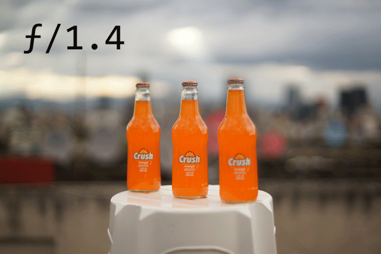
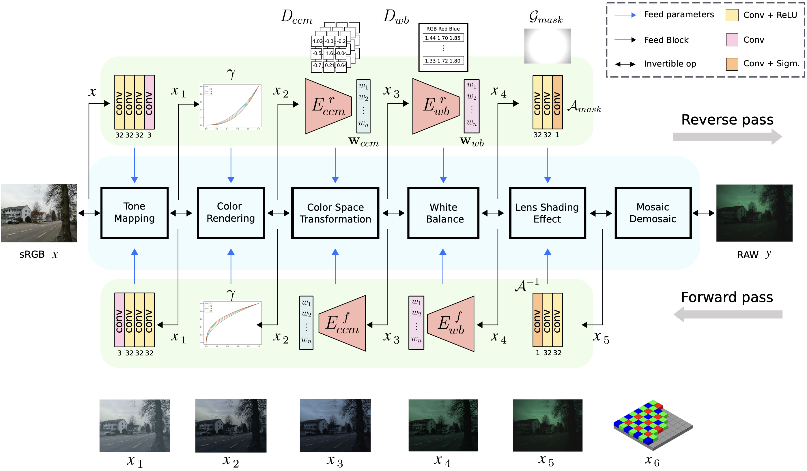
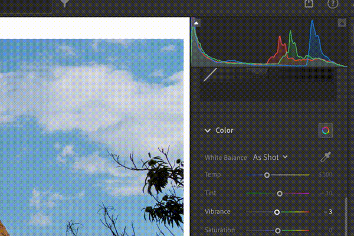
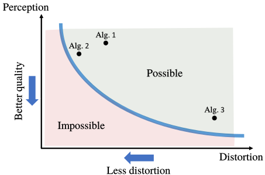

Introduction
Welcome to A Tour Through AI-powered Photography and Imaging tutorial at ICCV 2025, 19th October!
Computational Photography and Low-level Computer Vision are pivotal research areas, with significant impact on both academia and industry. This tutorial bridges the gap between academic research and industry applications by providing an in-depth, hands-on exploration of computational photography and imaging using deep learning.
We will cover Neural Image Signal Processors (ISPs), neural networks for image restoration and enhancement, quality metrics, and synthetic data generation pipelines.
Attendees will acquire state-of-the-art knowledge in datasets, simulations, model development, and evaluation, empowering them with the tools and insights needed to accelerate innovation in this field.
Tutorial Schedule & Content

Part 1: Data collection and Synthetic data generation
How can we collect RAW and RGB images for training deep neural networks? We will discuss the best practices for data collection, filtering and pre-processing. How can we leverage real data to generate synthetic data?
How can we collect RAW and RGB images for training deep neural networks? We will discuss the best practices for data collection, filtering and pre-processing. How can we leverage real data to generate synthetic data?

Part 2: Neural ISP Architectures
Neural Image Signal Processors (ISPs) are often notably more complex than industry ISPs, moreover, the neural networks do not allow explicit mechanisms of quality or color control. We will discuss possible solutions to design fast and controllable pipelines using deep learning.
Neural Image Signal Processors (ISPs) are often notably more complex than industry ISPs, moreover, the neural networks do not allow explicit mechanisms of quality or color control. We will discuss possible solutions to design fast and controllable pipelines using deep learning.

Part 3: Photo Enhancement and Editing
We will discuss efficient Bokeh rendering, image enhancement and restoration, LUTs, and photo-realistic image editing.
We will discuss efficient Bokeh rendering, image enhancement and restoration, LUTs, and photo-realistic image editing.

Part 4: Benchmarks and Future Directions
We will present and review the most common benchmarks and metrics to evaluate our models for RAW image restoration, RGB rendering, restoration and enhancement. Open challenges, research opportunities, and Q&A.
We will present and review the most common benchmarks and metrics to evaluate our models for RAW image restoration, RGB rendering, restoration and enhancement. Open challenges, research opportunities, and Q&A.
| Time | Session | Speaker |
|---|---|---|
| 09:30 - 09:40 | Welcome & Introduction | Organizers |
| 09:45 - 10:15 | RAW Reconstruction and Restoration | Marcos V. Conde |
| 10:15 - 10:45 | Advanced Denoising and RAW Processing | Jiacheng Li, Feiran Li (Sony AI) |
| 10:45 - 11:30 | Controllable Neural Image Processing | Marcos V. Conde |
| 11:30 - 11:45 | Controllable Bokeh Rendering | Tim Seizinger (University of Würzburg) |
| 11:45 - 12:15 | VLMs and Image Processing | Marcos V. Conde |
| 12:15 - 13:00 | New Optics and Advanced ISPs | Jingxi Li, Shivansh Rao (GLASS Imaging) |
Local Hawaii time - Talks will be recorded :)
Organizers and Lecturers

Marcos V. Conde, Radu Timofte, Tim Seizinger, Zihao Lu, Jiacheng Li, Feiran Li, Daisuke Iso, Jingxi Li, Shivansh Rao, Tom Bishop
Contact organizer: marcos.conde[at]uni-wuerzburg.de